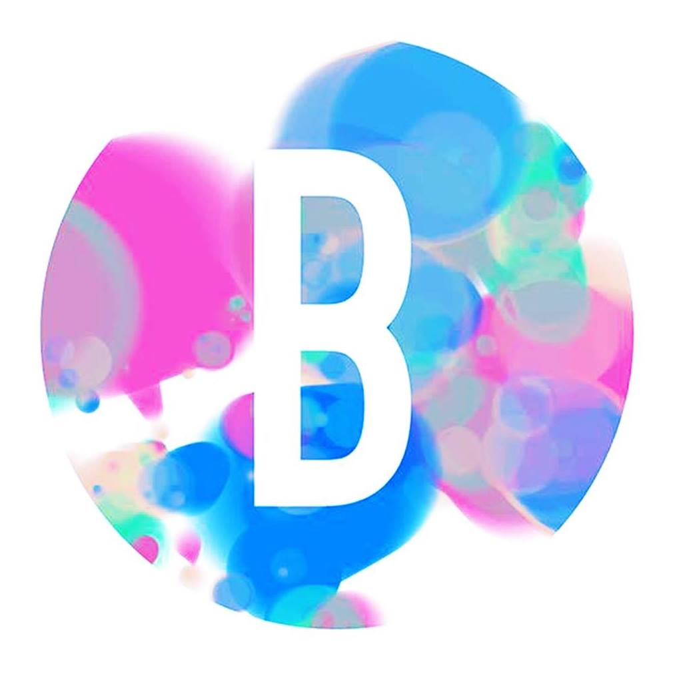

Organised events
VIII EJIBCE, in Coimbra, December 20th

Webinars cycle during the COVID-19 pandemic, 'Para além da pandemia', organised by ANBIOQ"
VII EJIBCE - Lisbon, December 20th
VI EJIBCE - Lisbon, December 21st
V EJIBCE - Coimbra, December 22nd
MYD first edition, by JEST. Data science centered conference with the participation of Feedzai, Critical Software, Fraunhofer among others - Coimbra, November 25th
A Python workshop, by JEST. Python workshop with modules on introduction, visualization, data manipulation and machine learning, Coimbra, April, 17th, 19th, 24th and 29th

R workshop by JEST - Coimbra, November 28th, 29th, December 5th, 6th

Bioempreende o teu Futuro, 4th Edition - Coimbra, by NEBIOQ/AAC, entrepreneurship event with competition, May 20th-22nd

IX ENEBIOQ, National Biochemistry Students Meeting. Event with over 400 participants, on March 18th-21st
Bioempreende o teu Futuro, 3rd Edition - Coimbra, by NEBIOQ/AAC, entrepreneurship event with competition, March 6th-8th
Contact
If you wish to contact me please do it through martinsgomes.jose@gmail.com or any of the social networks displayed at the bottom of the navigation menu.